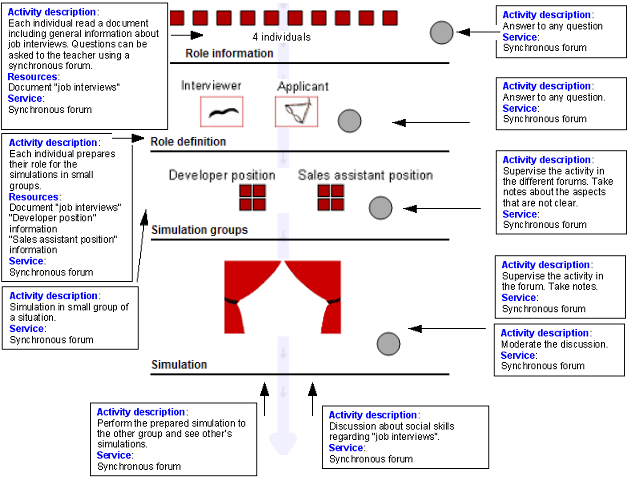

Simulation CLFP-based LD: Social Skills “Job interview”
Two individuals play the role of interviewers and other two the role of applicants. An interviewer and an applicant play a “developer position interview” and the others a “sales assistant position interview”. Each person consults general information about job interviews and prepare their role according to the position of the interview. Each couple prepare using a synchronous forum a simulation according to the assigned situation. Then, they perform the situation to the other group and read the dialog prepared by the other group. Finally, they debate about social skills regarding “job interviews”. The teacher moderates the discussion and can answer any question in the two first phases of the LD.

Objectives
- To learn social skills regarding “job interview”.
- To know the importance of social skills.
Prerrequisites
- (Any remarkable prerequisites).